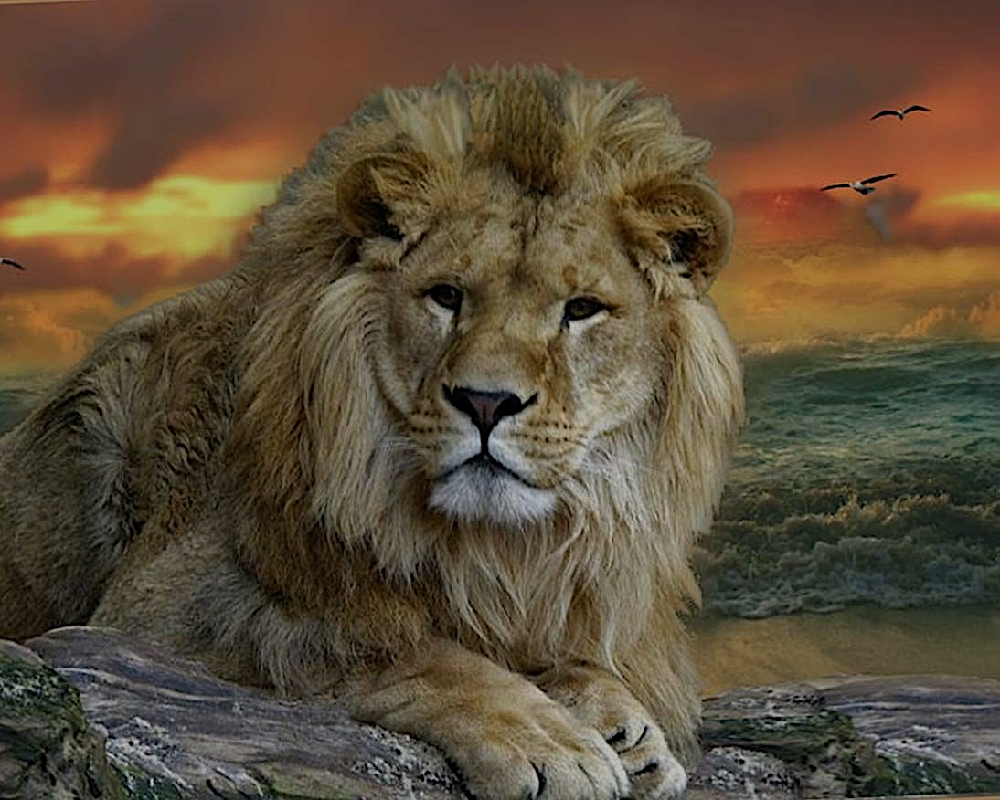

Welcome to Animal Conservation Department!
485 elephants
Roam Yala National Park
523
Bird species

- Yala National Park boasts the world's highest leopard density within a protected area, with an
estimated 1 leopard per 3-5 km² (1.2-1.9 sq mi) in Block 1.
-
Wilpattu National Park also has a healthy leopard population, with an estimated density of 1 leopard per 8-12 km² (3.1-4.7 sq mi).
-
Sri Lankan leopards are genetically distinct from mainland Asian leopards.

- It's important to clarify that lions are currently extinct in Sri Lanka. There are historical and
cultural connections to lions in the island nation, but the last confirmed sighting of a lion dates
back to the 1939 and the species is considered extinct locally.
-
Scientific name: Panthera leo sinhaleyus
Nickname: Ceylonese lion
-
Conservation efforts: While focused on protecting existing wildlife, the story of the Sri Lankan
lion serves as a reminder of the importance of habitat conservation and preventing species extinction.

- 485 elephants roam Yala National Park, one of the highest densities in the world.
-
Sri Lanka boasts the highest recorded tusk weight for an Asian elephant - a whopping 88.7 kg (195.5 lbs)!
-
The island hosts two distinct elephant sub-species: the Sri Lankan elephant (Elephas maximus maximus) and the Indian elephant (Elephas maximus indicus).